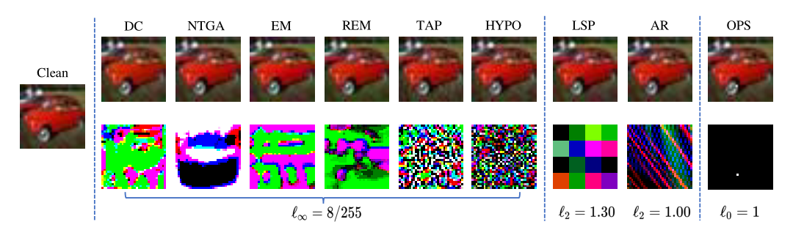

{{content}}
Availability poisoning is an emerging and popular topic that investigates stealthy alterations on data to make that data unusable for deep learning model training. Recent papers have proposed a number of usability poisoning attacks and defenses. It is important to establish a benchmark to review current progress and facilitate future research in the area of availability poisoning.
APBench aims to provide easy implementations of availability poisoning attack & defense methods to facilitate future research as well as a comprehensive evaluation of existing attack and defense methods. We eagerly welcome you to contribute your availability poisoning attack & defense methods to APBench.
